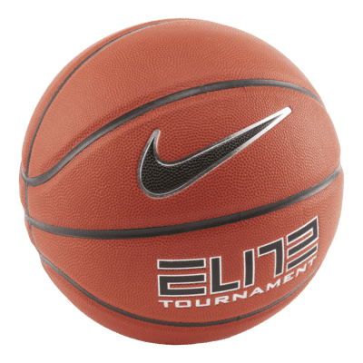
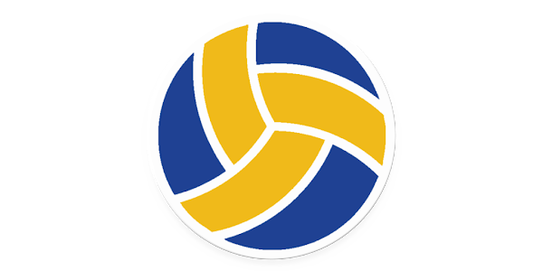

MIS DEPORTES FAVORITOS
| BASQUETBOL |
 |
| Me gusta jugar básquetbol. Tengo muchos amigos con quienes me reúno varias veces al mes para practicar este deporte. La agilidad, los reflejos, la rapidez, el sentido de la posición, la dosificación del esfuerzo, la firmeza especialmente en los últimos momentos del partido, cuando la reflexión en un lanzamiento a canasta puede ser decisivo y la precisión son cualidades que distinguen a cada jugador de básquetbol. |
| FUTBOL |
 |
| El fútbol es el deporte más popular del mundo, tanto en número de espectadores como en número de participantes. A los mexicanos nos encanta jugar fútbol. Somos aficionados y vamos frecuentemente al estadio para jugar o apoyar a nuestro equipo favorito. No solo juego, sino que veo con avidez los partidos que se transmiten por televisión. Las competencias a nivel nacional y mundial y los torneos para la Copa del Mundo son mi pasión. |
| VOLEIBOL |
 |
| El voleibol es uno de los deportes olímpicos. Creo que cada uno ha jugado alguna vez este deporte. Mi novia va seguido a jugar voleibol y yo la acompaño. Conozco bien a todas sus compañeras, de hecho, tienen un muy buen equipo. Este verano planean competir con otros equipos en el extranjero. A mí me ha tocado jugar voleibol en la playa y me he sentido muy a gusto. |
| ¿Qué deporte te gusta? |
Regresar al currículum |